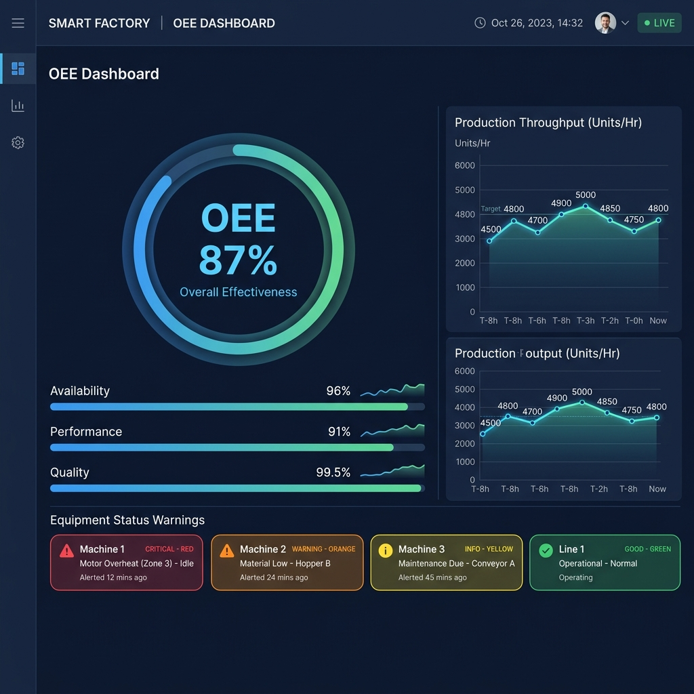
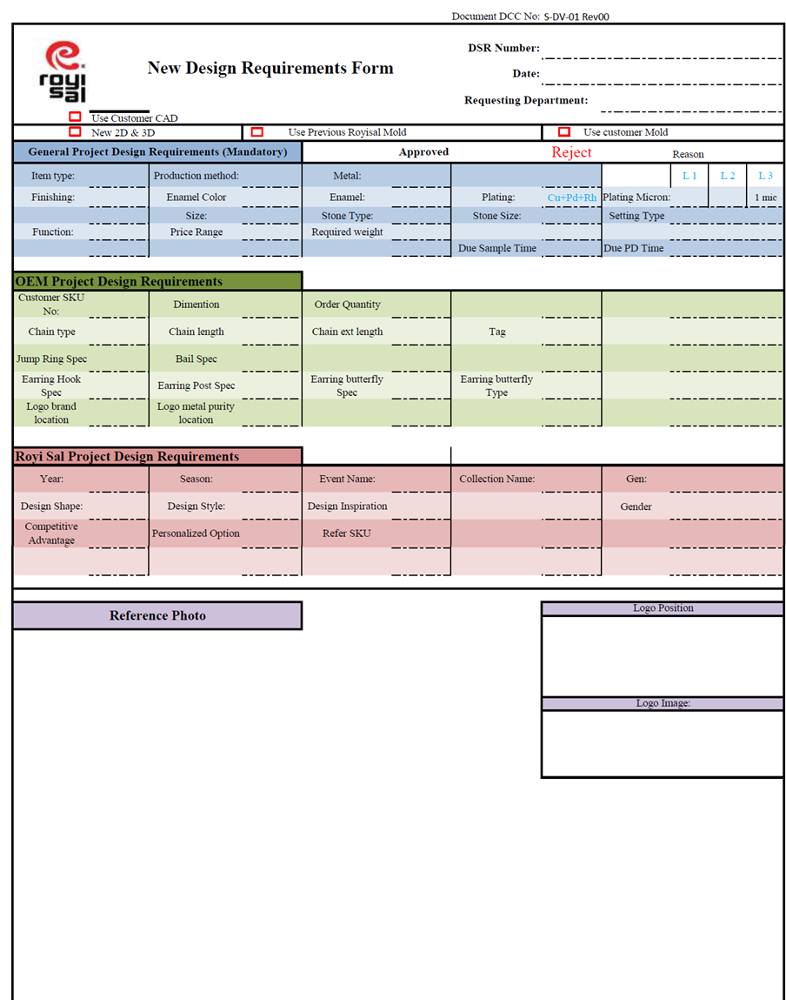
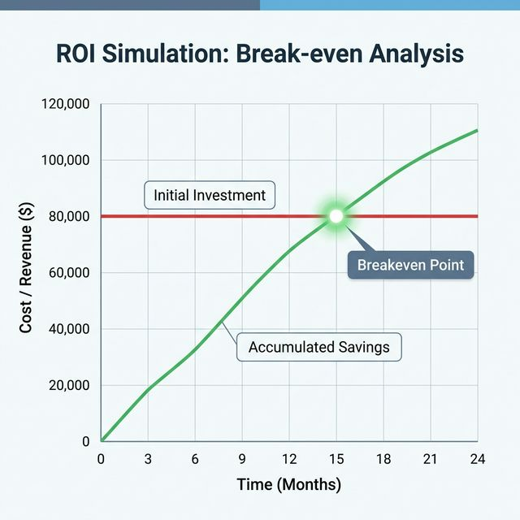

Giải Pháp
Smart Factory 4.0
インダストリー4.0
スマートファクトリーソリューション
Chuyển Đổi Số Toàn Diện Cho Nhà Máy Sản Xuất 製造工場の包括的デジタルトランスフォーメーション
Khách hàng クライアント
Nhà máy Công nghiệp (Nhật Bản) 工業製造拠点 (日本)
Quy mô: 2,000+ nhân sự 規模: 2,000名以上
Thực hiện bởi 提案者
Liên minh Y-NetTech & DanaExperts Y-NetTech & DanaExperts アライアンス
Ngày: Tháng 03, 2026 日付: 2026年 3月
01 Bài Toán Vận Hành & Tầm Nhìn 運用上の課題と協業ビジョン
Kính thưa Ban Giám Đốc,
役員各位、
Trong kỷ nguyên sản xuất hiện đại, dữ liệu liên tục là yếu tố sống còn. Đối với nhà máy hơn 2,000 nhân sự, việc duy trì quy trình quản lý thủ công tạo ra sự lãng phí vô hình khổng lồ trong ngân sách vận hành.
現代の製造業において、一貫性のあるデータは不可欠です。2,000名以上の従業員を抱える工場にとって、手作業による管理を維持することは、運営予算において目に見えない莫大な無駄を生み出します。
Thách Thức Hiện Tại (Nỗi Đau) 現状の最大の課題（ペインポイント）
Quản lý bằng Giấy & Excel 紙とExcelによる手動管理
Dữ liệu chia cắt. Tỉ lệ sai sót do con người cao, tốn thời gian đối soát. データが分断されており、人為的エラーの発生率が高く、照合に膨大な時間を要します。
Lãng Phí Nhân Sự Gián Tiếp 間接部門の人材の浪費
Cần lực lượng lớn nhân sự chỉ để ghi chép, nhập chứng từ báo cáo mỗi ngày. 毎日、レポートの記録・入力・集計だけのために、非常に多くの人員を配置する必要があります。
Khuất tầm nhìn (No Real-time) リアルタイムの可視性欠如
Lãnh đạo không theo dõi được Hiệu suất thiết bị (OEE) và tồn kho tức thời. 経営陣は、設備総合効率（OEE）やリアルタイムの正確な在庫状況を即座に把握できません。
Tích Hợp Hệ Thống Cũ Kém レガシーシステムの統合困難
Thiết bị phần mềm cũ không API tạo ra các ốc đảo dữ liệu trong nhà máy. API接続を持たない古いクローズドソフトウェアにより、工場内にデータの“孤島（サイロ）”が形成されています。
Sự Chuyển Trục Mô Hình (Paradigm Shift) パラダイムシフト：運用モデルの変革
Tầm Nhìn Hợp Tác: Y-NetTech x DanaExperts 統合されたアライアンス：Y-NetTech x DanaExperts
Tầng Thiết Bị & Sàn Sản Xuất ハードウェア・製造フロア層
Y-NetTech
- Automation: Máy móc, PLC, Robot.
- Digitalization: Thu thập dữ liệu phần cứng trực tiếp.
- 自動化・FA（ファクトリーオートメーション）: 機械設備、PLC、ロボット。
- デジタル化: 製造現場から直接ハードウェアデータを収集。
Tầng Quản Trị ERP & MES ERP・MES 管理システム層
DanaExperts
- Odoo ERP: Phân hệ nghiệp vụ Mua Hàng, Tồn Kho cốt lõi.
- MES / Dashboard: Nhận dữ liệu để phân tích OEE Real-time.
- Odoo ERP: 購買、在庫などビジネスのコアシステム。
- MES・ダッシュボード: ハードウェアデータを受信し、リアルタイムでOEEと生産進捗を可視化。
02 Bức Tranh Toàn Cảnh (Data Workflow) 全体像 (データワークフロー)
Luồng dữ liệu liền mạch. Hệ thống thiết kế chuyên tối ưu cho nhà máy quy mô 2,000 nhân sự. 原材料の購買から最終出荷までのシームレスなデータフロー。2,000名規模の分業モデルに最適化されたシステムアーキテクチャ。
Giao Diện Dashboard OEE Thời Gian Thực (Real-time MES) リアルタイム OEE モニタリングダッシュボード (MES画面)

Bảng điều khiển Hiệu suất Tổng thể Thiết bị (OEE) – cảnh báo tựđộng từ dữ liệu IoT thực tế của nhà máy. IoTセンサーからのリアルデータIJB;基づいたOEEモニタリングダッシュボード．決定次窗への直着的なデータ提供．
Thế Mạnh Hiệu Suất Cốt Lõi Của Nền Tảng Odoo Odooプラットフォームのコアパフォーマンスの強み
Quản Trị Đa Nhà Máy & Đồng Bộ SOP マルチカンパニー管理とSOPの同調
Odoo hỗ trợ kiến trúc Multi-company, giúp Ban lãnh đạo gom dữ liệu của phân xưởng và văn phòng trụ sở về một khối tập trung. Cho phép nhân bản nhanh chóng các Quy chuẩn Vận hành Tiêu chuẩn (SOP) để đảm bảo mọi nơi đều hoạt động nhất quán. Odooのマルチカンパニーアーキテクチャにより、経営陣は複数拠点や本社のデータを単一のデータベースに集約できます。標準作業手順書（SOP）を迅速に横展開し、すべての工場での運用の一貫性を保証します。
Khơi Thông Chuỗi Cung Ứng Phức Tạp 複雑なサプライチェーンの可視化と解明
Nối liền các đứt gãy từ khâu Nhập khẩu vật tư, Lưu kho, Sản xuất cho đến Kiểm định Chất lượng (QC) và Giao hàng thành một chuỗi giá trị xuyên suốt. Giải quyết triệt để nút thắt cổ chai logistics của nhà máy quy mô lớn. 原材料の輸入から倉庫保管、製造、品質検査（QC）、および物流に至るプロセスをシームレスな単一のバリューチェーンに統合し、大規模工場における情報のボトルネックを完全に排除します。
Xử Lý Kỹ Thuật (Phần Mềm Đóng) 技術的統合ソリューション（閉鎖的システム対応）
Ngay cả các thiết bị dùng phần mềm legacy (cũ) không cho phép API, chúng tôi có 3 phương án đấu nối: 工場内の古い設備で通信用APIを備えていない・ソフトウェアが閉鎖的（クローズド）である場合でも、3つの統合アプローチが可能です：
Truy xuất trực tiếp Read-Only thông qua Middleware vào database gốc để lấy log. ミドルウェアを介して元のデータベースに読み取り専用（Read-only）で直接接続し、ログを安全に抽出します。
Tự động hóa luồng Export/Import FTP thông qua file (.csv/.txt) sinh ra từ máy. 機械が自動生成するCSVやテキストファイルをFTP経由でスケジュール通りに自動取得します。
Trỏ dây cáp điện từ IoT Box thẳng vào máy để báo lên Odoo mà không đụng chạm software. Odoo IoT Boxのケーブルを直接機械の信号線（PLCなど）に接続し、古いソフトウェアを完全に迂回して状態を通知します。
Hệ Thống Quản Trị Và Tích Hợp Odoo - Quản Lý Thiết Bị Tích Hợp Odoo 管理および統合システム - 統合デバイス管理

Sơ đồ luồng dữ liệu thiết bị thực tế trong nhà máy. 工場内の実際のデバイスデータフロー図。
03 Bảo Chứng Năng Lực: Sự Khắc Nghiệt Của Ngành Trang Sức 能力の証明：ジュエリー業界の極めて厳しい技術要件
Để minh chứng cho Ban giám đốc về sức chịu tải và độ chính xác của Odoo ERP, chúng tôi sử dụng Ngành Trang Sức – ngành công nghiệp tinh vi bậc nhất – làm chuẩn đối sánh. 経営陣の皆さまに対しOdooのデータ処理能力と堅牢性を証明するため、製造業の中でも最も精巧で厳しい要件を持つ「ジュエリー・宝飾品業界」の事例を参考指標として紹介します。
Định mức (BOM) Phức Tạp 超複雑なBOM (部品表)
Mỗi sản phẩm trang sức có hàng ngàn biến thể (tinh khiết vàng, số carat). Odoo tính toán trôi chảy các bản vẽ kỹ thuật này. 各製品は数千のバリエーション（金の純度、ダイヤのカラット数やカット）を含みます。これら多階層の複雑な設計構成をスムーズに処理します。
Tồn Kho Vi Mô マイクロレベルの在庫管理
Quản lý thất thoát đo mút ở mức miligram thông qua túi lưu trữ ("bag control") giữa từng khâu đánh bóng. 研磨やセッティングの各工程間において、「バッグコントロール」方式を使用し、ミリグラム単位の損失や材料の移動を厳格に追跡します。
Giá Biến Động Real-time リアルタイムの市場価格連携
Tự động liên kết mốc giá vàng thế giới để định giá chi phí linh kiện tồn kho thay đổi theo phút. 世界の金・貴金属市場価格と自動連携し、1分単位でリアルタイムに材料コストと在庫価格を動的評価（COGS）します。
Case Study Tiêu Biểu / Thực Tế: Everlee Jewelers 主要実績事例：Everlee Jewelers（米国）
Chuyển đổi số thành công bằng Odoo 17 Enterprise Odoo 17 DX エンタープライズ導入成功
Khó Khăn Trước Đây 導入前の重大なペインポイント
Hệ thống phân mảnh, tính hoa hồng thủ công. Quản lý tồn kho mờ mịt gây khó khăn cực độ cho B2B. 既存システムが分断され、販売手数料計算も手動。在庫の透明性が著しく低く、B2Bパートナーとの連携に極度の支障が生じていました。
Khắc Phục Bằng Hệ Sinh Thái Odoo MES Odoo + MES 導入による解決策
- Cung cấp Cổng Portal trao đổi cho đối tác B2B.
- Tự động hóa thanh toán hoa hồng (Commission).
- B2Bパートナー向けの標準通信ポータルを提供し集権化。
- 複雑な毎月の売上手数料（Commission）計算を完全自動化。
Hiệu Quả Đột Phá Sau Triển Khai 導入後の圧倒的なROIと成果
04 Đột Phá AI: Tự Động Hóa Từ Cuộc Giao Tiếp AIのブレークスルー：初期のコミュニケーションから自動化
DanaExperts sở hữu năng lực AI chuyên sâu. Giải quyết tận gốc bài toán "nhập liệu thủ công" bằng giải pháp AI Meeting Secretary tự ghi chép. DanaExpertsはエンタープライズAI技術を保有しています。独自のAIシステム（AI Meeting Secretary）によりデータ化を完全自動化し作業員から手動データ入力問題を根本から解決します。
Hệ sinh thái AI Meeting Secretary hoạt động thế nào? AI機能はどのように動作するのか？
-
1Thu thập đa kênh:マルチチャネルからの収集: AI tự phân tích file ghi âm, họp video (Teams/Zoom), Email. 音声ファイル、オンライン会議動画、メールテキストなど、多角的な情報を分析。
-
2Bóc tách thông minh:AIによるインテリジェント抽出: Dùng Whisper (Speech-to-Text) và LLM để loại bỏ hội thoại thừa. WhisperとLLMモデルを使用し、関係のない雑談から核心情報のみを抽出。
-
3Auto Data Mapping:自動データ変換とマッピング: Nhận diện và điền chuẩn xác >25 thông số kỹ thuật (Chất liệu, Kích thước, v.v.) vào Form. 会話の文脈から25項目以上の技術仕様（素材など）を特定し、Odoo等のフォームへ正確に自動入力します。
Minh Họa Khả Năng Sinh Form Tự Động S-DV-01 技術要件フォーム (自動入力成功例)
Biểu mẫu yêu cầu phức tạp được AI tự soạn chính xác 95%. 人間の手による入力なしに、要件の複雑な見積りや定義を95%以上の精度で自動設定します。

Ứng Dụng Giá Trị Trực Tiếp Cho Nhà Máy Tại Nhật Bản 日本の工場全体における莫大な実践的価値
Với số lượng lớn Vendor nội địa Nhật và Oversea, AI Secretary sẽ "lắng nghe" và dịch tự động các trao đổi phức tạp, sau đó soạn thảo ra Lệnh Mua Hàng (PR) hoặc Yêu cầu Đổi Thiết Kế (ECO). Tính năng này giải phóng hàng chục ngàn giờ hành chính và rào cản ngôn ngữ. 日本のサプライヤーや海外のベンダーとのやり取りをAI秘書が直接「リスニング」し解析。その後、複雑な購買依頼書（PR）や設計変更通知（ECO）のドラフトを自動で作成します。これにより言語の障壁と入力作業が解消され、従業員の年間数万時間が解放されます。
04b Case Study Thực Tế: Lumina Jewelers 実践的ケーススタディ: Lumina Jewelers
Tóm Tắt Tổng Quan (Executive Summary) エグゼクティブサマリー
Lumina Jewelers (Mỹ) là nhà sản xuất trang sức tùy chỉnh với 35 nhân sự, doanh thu hơn 8 triệu USD. Trước Odoo, họ vật lộn với hệ thống phân mảnh (Magento, QuickBooks, sổ sách xuất/nhập kim loại...). Bằng cách triển khai Odoo ERP, Lumina đã hợp nhất Kho, Sản xuất, Bán hàng và Kế toán thành một nền tảng duy nhất chỉ trong 7 tháng. Lumina Jewelers（米国）は、従業員35名、売上高800万ドル以上の特注ジュエリー製造小売企業です。導入前はシステムが分断されており、在庫情報の不正確さに悩まされていました。Odoo ERPの導入により、わずか7ヶ月で在庫、製造、販売、会計を単一システムに統合しました。
Thách Thức Hiện Tại (Pain Points) 直面していた課題 (ペインポイント)
- ✖Sai số Tồn kho Nguyên liệu: Tổn thất vàng, kim cương do theo dõi phân tán thủ công bằng tay.在庫の不正確さ: 手動シリアル追跡のため、金やダイヤの高価な原材料で在庫ズレが頻発。
- ✖Tắc Nghẽn Sản Xuất: Cấu hình sản phẩm quá phức tạp làm chậm luồng đơn hàng sản xuất tùy chỉnh (Custom order).製造のボトルネック: 製品構成が複雑で、カスタムオーダーの製造に大規模な遅延が発生。
- ✖Rời rạc Dữ Liệu: Sales, Kỹ thuật và Kế toán (QuickBooks) hoạt động như những ốc đảo độc lập không thông suốt.データの孤立: 販売、製造、会計（QuickBooks）がそれぞれ独立した“サイロ”として機能。
Giải Pháp Phần Mềm Odoo Do Partner Quy Hoạch パートナーによるOdooソリューション
- ✔Kho & Sản xuất (BOM Tracking): Cấu trúc BOM phân tầng chặt chẽ; Tính toán định mức "Tỷ lệ tinh chế thu hồi" (Refining yields).倉庫・製造: 多階層BOMにより原材料の歩留まりや精錬ロスを精密に計算・追跡。
- ✔Hệ sinh thái CRM Bán hàng: Trang bị bộ tùy chỉnh sản phẩm; Tự động hóa cổng hoa hồng đại lý và hợp đồng ký gửi B2B.販売・CRM: B2B委託ポータル及び営業担当者の販売手数料の完全自動計算を導入。
- ✔Kế toán Đồng bộ (Accounting): Tự động khớp lệnh chứng từ với tỉ lệ Match tỷ trọng ngân hàng hơn 95%+.会計: 95%以上の精度で請求書と支払勘定の自動照合（Reconciliation）を実現。
Kết Quả Đột Phá Bức Tranh Toàn Cảnh (Sau 7 Tháng) 7ヶ月後の圧倒的なパフォーマンス成果
"Odoo đã biến thành duy nhất một Chân lý dữ liệu (Single source of truth) trong cấu trúc vận hành của chúng tôi. Giờ đây các Kỹ sư không còn vật lộn với bảng tính rải rác mà có đủ thời gian để tối ưu hoá chuyên môn cốt lõi!"
— COO, Lumina Jewelers
「Odooは我々の唯一の真実（Single source of truth）となりました。Excelとの格闘は終わり、最高のジュエリーを創り出すという本来のコア業務に集中できるようになりました。」
— Lumina Jewelers COO
* Số liệu tham chiếu từ các triển khai Odoo trong ngành trang sức. Kết quả thực tế có thể khác nhau tùy theo quy mô. *この数字はジュエリー業界のOdoo実装事例からの参考値です。実際の結果は規模により異なります。
→ Tiếp theo: Phân tích ROI (Trang 05) → 次へ：ROI分析（ページ 05）05 Phân Tích Hoàn Vốn (ROI) 投資利益率（ROI）分析モデル
Mô Phỏng ROI Cho Doanh Nghiệp (2,000 Staffs) ROIシミュレーション（人員規模2,000名）
Chi phí lãng phí hiện hành 導入前の無駄な見えないコスト
- ✖ Quỹ lương cho các nhân sự chỉ chuyên ngồi nhập tài liệu dư thừa. 書類整理・データ入力業務だけを専門とするスタッフの膨大な人件費。
- ✖ Thâm hụt tồn kho không rõ lý do do đối soát giấy tờ lệch. 紙での照合ズレによって原因不明の在庫損失が発生する。
- ✖ Hiệu suất thiết bị (OEE) thấp do không biết dây chuyền nào đang bị tắc nghẽn theo thời gian thực. どのラインがボトルネックになっているかリアルタイムで把握できないため、設備総合効率（OEE）が低水準に止まる。
Lợi Ích Của Công Nghệ Odoo + Y-NetTech Odoo + Y-NetTech導入後のメリット
- ✔ Điểu chuyển tối đa 50% người nhập liệu sang lao động sinh lời. 入力スタッフを最大50%削減し、利益を生む直接生産等へ配置転換。
- ✔ Lộ trình 100% không còn hàng tồn kho ảo, độ chính xác siêu cao. 架空在庫が消失し、極めて高い材料精度（99%以上）を保証。
DỰ KIẾN KHOẢNG THỜI GIAN HOÀN VỐN (Breakeven) 推定投資回収期間（ブレークイーブンポイント）
*Giảm quỹ lương + giảm hàng thiếu hụt bù đắp hoàn toàn chi phí phần cứng/mềm ban đầu. *給与削減＋在庫損失の削減分が、初期ハードウェア・ソフトウェア投資を完全に相殺します。

Mô phỏng điểm hoàn vốn theo chi phí cơ hội thực tế. 実際の機会費用と人件費に基づいたブレークイーブンポイントのシミュレーション図。
06 Tác Động Nhân Sự & Lợi Ích Cụ Thể Từng Quy Trình 人員インパクト & 各プロセスの具体的なメリット
* Ước tính cho nhà máy ~500 nhân sự gián tiếp. Số liệu chính xác sẽ được xác định sau Gap Analysis thực tế. * 間接部門500名規模の工場を前提としたシミュレーション。正確な数値はGap Analysis後に確定します。
Lợi Ích Đồng Bộ Hoá Dữ Liệu — 5 Quy Trình Thực Tế データ同期の具体的メリット — 5つのプロセス詳細
- ✔Tự biết cần mua gì qua Reordering Rules — không cần hỏi thủ kho補充ルールで自動発注判断、倉庫担当に聞く必要なし
- ✔MRP tính ngược BOM → mua đúng loại, đúng số lượng, đúng thời điểmMRPがBOMから逆計算し適切な品目・数量・タイミングで発注
- ✔So sánh báo giá nhiều NCC ngay trên hệ thống複数サプライヤーの見積もりをシステム上で直接比較
- ✔Phòng SX thấy ngay "kho có hàng chưa" — không cần gọi điện製造部門はリアルタイムで在庫状況を確認、電話不要
- ✔Reserve tự động NVL theo lệnh SX — không bị lộn với lệnh khác製造指示ごとに原材料を自動引当、他の指示との混同なし
- ✔3-way Matching: PO vs Delivery vs Invoice tự động đối chiếu発注書・納品書・請求書の3方向自動照合
- ✔Lịch SX tự tối ưu trên Gantt Chart — không họp lập kế hoạch mỗi sángガントチャートで自動スケジュール最適化、毎朝の計画会議不要
- ✔OEE real-time: thấy ngay máy nào đang chạy/dừng và lý doOEEリアルタイム：どの機械が稼働中/停止中か、理由も即時把握
- ✔Sensor Y-NetTech đếm sản lượng tự động — 0% ghi chép thủ côngY-NetTechセンサーが生産数を自動カウント、手書き記録ゼロ
- ✔Control Points tự tạo tại các bước quan trọng của sản xuất製造の重要工程に自動でQCチェックポイントを設定
- ✔Fail → NCR + block lô + alert quản lý ngay lập tức不合格→即座にNCR作成・ロットブロック・管理者アラート
- ✔Trace ngay lô NVL gây lỗi — rà soát toàn bộ sản phẩm liên quan欠陥原材料ロットを即時追跡、関連製品を全数確認
- ✔1 người thay cho 3 người — xuất kho + packing list + invoice cùng lúc1人で3人分の作業を実現：出庫・梱包・請求書を同時処理
- ✔Tồn kho cập nhật ngay khi xác nhận xuất — không có độ trễ出荷確認と同時に在庫が更新、タイムラグなし
- ✔Customer Portal: KH theo dõi trạng thái đơn hàng trực tiếp顧客ポータルで注文ステータスをリアルタイム確認
07 Cấu Trúc Đầu Tư & Luồng Sản Xuất Chi Tiết Trong Odoo 投資構造 & Odooにおける製造フロー詳細
Cấu Trúc Giá 3 Tầng (Basic → Standard → Advanced) 3段階の投資モデル（Basic → Standard → Advanced）
One-time · Triển khai 2–3 tháng初期費用のみ · 導入期間2〜3ヶ月
- ✔Cấu hình module theo workflow hiện có既存ワークフローに合わせたモジュール設定
- ✔Không custom code, deploy nhanhカスタムコードなし、迅速なデプロイ
- ✔Training cơ bản cho người dùngエンドユーザー向け基礎トレーニング
- ✔Purchase + Inventory + Manufacturing core購買・在庫・製造コアモジュール
+ ~5 triệu VND/tháng (Odoo License)+ 月額約500万VND（Odooライセンス）
One-time · Triển khai 3–4 tháng初期費用のみ · 導入期間3〜4ヶ月
- ✔Tất cả tính năng BasicBasicの全機能を含む
- ✔Tích hợp Barcode/RFID scannerバーコード/RFIDスキャナー統合
- ✔Migrate data từ hệ thống cũ (Excel/ERP cũ)旧システム（Excel/旧ERP）からのデータ移行
- ✔Quality module + Approval flow tùy chỉnh品質モジュール＋カスタム承認フロー
- ✔Báo cáo & Dashboard cơ bản cho BGĐ経営幹部向け基本レポート＆ダッシュボード
One-time · Triển khai 4–6 tháng初期費用のみ · 導入期間4〜6ヶ月
- ✔Tất cả tính năng Standard+Standard+の全機能を含む
- ✔Tích hợp Sensor/PLC Y-NetTech (IoT Box)Y-NetTech センサー/PLC統合（IoT Box）
- ✔Custom OEE Dashboard cho BGĐ real-time経営幹部向けカスタムOEEリアルタイムダッシュボード
- ✔AI Meeting Secretary tự động tạo POAI秘書による購買依頼書の自動生成
- ✔Tích hợp hệ thống cũ không API (DB/File sync)非API旧システム統合（DBダイレクト/ファイル同期）
💡 Custom Add-on — Tính thêm % trên gói Standard+:カスタム追加オプション — Standard+に対する追加割合：
Luồng Sản Xuất Chi Tiết Trong Odoo: Đơn Hàng → Giao Hàng Odooにおける製造フロー詳細：受注から出荷まで
KH gửi đơn → SO tạo trên Odoo ngay lập tức顧客発注→Odooに即座にSO作成
Odoo tự tính BOM → lập MO + PO NVL thiếu + xếp lịch GanttBOM逆算→製造指示/不足材料の発注/ガントスケジュール自動生成
Tablet tại xưởng: công nhân bấm Start/Done, Sensor Y-NetTech đếm tự động現場タブレット：作業員がStart/Done操作、Y-NetTechセンサーが自動カウント
Pass → kho thành phẩm. Fail → NCR tự động + block lô + alert合格→完成品倉庫。不合格→自動NCR・ロットブロック・アラート
One-click: Phiếu xuất + Packing List + Invoice liên thông kế toánワンクリック：出荷伝票・梱包リスト・請求書を自動生成し会計に連携
So sánh thời gian xử lý処理時間の比較
06 Lộ Trình Tích Hợp Rủi Ro Bằng Zero ゼロリスクのシステム導入ロードマップ
Triết lý tích hợp hệ thống: "Think Big, Start Small". Không bao giờ làm ngưng trệ nhà máy. 私たちのシステム導入哲学は「Think Big, Start Small（大きく構想し、小さく始める）」です。工場の稼働を急停止させることは決してありません。
Giai Đoạn 1: Pilot Kỹ Thuật (Proof of Concept) フェーズ 1: 技術検証とパイロット運用（POC）
Thực hiện khởi động dự án bằng Phân tích khoảng cách (Gap Analysis). Sau đó triển khai thử nghiệm cục bộ tại một dây chuyền cốt lõi để đánh giá tính chính xác của dữ liệu, đảm bảo duy trì hoạt động kinh doanh liên tục trong suốt quá trình chuyển đổi. プロジェクトはギャップ分析 (Gap Analysis) の実施から始まります。その後、コア生産ライン1か所で実証実験を行い、システム移行期間中も企業の継続的稼働を100%維持しながらデータ精度を検証します。
Month 1 - 2Giai Đoạn 2: Chuyển Đổi Từng Phần (Phased Migration) フェーズ 2: 段階的システム移行 (Phased Migration)
Tích hợp Odoo theo từng bộ phận cốt lõi một cách cuốn chiếu (ví dụ: Phân hệ Kho & Sản xuất trước, Kế toán & Bán hàng sau). Phương pháp chia nhỏ hệ thống thành từng Module này giúp nhân sự dễ dàng hấp thụ công nghệ mới, đồng thời triệt tiêu hoàn toàn rủi ro ảnh hưởng đến guồng máy hiện tại. 工場全体を一度に置き換えるのではなく、指定された機能単位でOdooを段階的に統合します（例：倉庫・製造モジュールを先行稼働させ、後に会計・販売へ拡大）。プロセスを細分化することで、従業員の適応期間を確保し、システム稼働におけるリスクを100%排除します。
Month 3 - 6Giai Đoạn 3: Roll-out Toàn Bộ Quy Mô フェーズ 3: メイン工場への全面展開（スケール）
Gắn thiết bị và scale lên 2000 nhân sự khi dữ liệu POC đã trơn tru hoàn hảo. フェーズ1のデータ移行が完璧に動作することが証明された後、2,000人規模の工場全体へ残りの機能を安全に展開します。
Month 7+Trân Trọng Đề Xuất ご提案にかかる御礼
Sự kết hợp giữa Nền tảng Tự động hóa Y-NetTech và Cỗ máy Dữ liệu Odoo DanaExperts là câu trả lời toàn diện nhất cho nhà máy của Quý khách. Y-NetTechの強力なハードウェアプロセス自動化プラットフォームと、DanaExpertsによるソフトウェアERPの融合こそが、貴社工場の革新への最も包括的な答えであると確信しています。